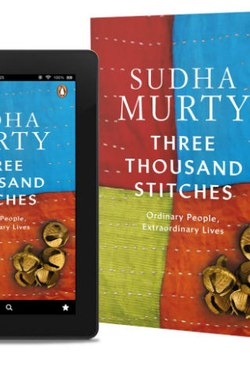

Library › Self-Improvement
The Three Thousand Stitches — Summary & Key Lessons

Sudha Murty's life stories: kindness as engineering, wealth as a tool, and the small stitch that holds a life together.
📖 OPEN THE FULL INTERACTIVE BREAKDOWN →🌐 Read it in Hindi, Hinglish, Gujarati, Tamil & 22 more languages — free, with audio.
💡 The Big Idea
The title story — a woman whose daughter's wedding quilt carried three thousand stitches from strangers — is a metaphor for the book: a life is stitched together by small, invisible acts of generosity. Murty's essays distill her core philosophy: money is only meaningful when it flows; education is the one thing nobody can take; and power is measured by what you do for people who can do nothing for you.
🧠 The 5 Key Lessons
Lesson 1: Start From Where You Are
Story 1: The Beginning
Murty's essays repeatedly show her starting small: one teacher, one village, one engineering seat won on merit. She rejects the idea that you need permission or capital to do good — you need attention. The greatest leaders she writes about began by noticing a problem close enough to touch.
📖 Example: She began philanthropy by funding one student's education; the foundation grew from that single stitch. Read the full example →
⚡ Do this: Pick one problem within arm's reach and do one concrete thing for it this week.
Lesson 2: Education Is the Inheritance
Story 2: The Gift
Across her stories, the same theme recurs: parents who can offer nothing else can offer education, and education converts poverty into possibility. She distinguishes between schooling and learning — certificates alone do not free you; curiosity, values and skill do. The best education she honours is the one that teaches you to think for others.
📖 Example: A daughter of a daily-wage father becomes a doctor because someone funded her school books — one generation breaks the chain. Read the full example →
⚡ Do this: Fund or mentor one learner this year — by time, money or knowledge.
Lesson 3: Wealth Is a River
Story 3: Money That Flows
Murty's philosophy of money is flow: wealth that is hoarded becomes stagnant and corrupting; wealth that flows through education, health and dignity multiplies in human terms. The Infosys Foundation gives systematically, like a business with a different bottom line. She warns that sudden wealth without values destroys more families than poverty does.
📖 Example: A lottery winner's family often fractures; a family that builds slowly with discipline stays whole. Read the full example →
⚡ Do this: Set a 'flow rule': a fixed share of your income that must move to others, automatically.
Lesson 4: Humility Is the Management Skill
Story 4: The Powerful and the Humble
Her essays about industrialists and village women share one insight: real stature shows in how someone treats people who can offer nothing. The CEO who remembers the cook's name, the billionaire who sits on the floor — those are the measures. Humility is not self-deprecation; it is accurate self-regard plus genuine interest in others.
📖 Example: A young engineer who thanks the cleaning staff by name gets better work and better lives than the one who ignores them. Read the full example →
⚡ Do this: Deliberately learn and use the names of people who serve you — this week, every time.
Lesson 5: Stitch by Stitch
Story 5: The Quilt
The title story's lesson is patience with ordinary means: no grand endowment, just thousands of small contributions creating a whole. Change is never one heroic act; it is a fabric of unglamorous repetitions. Murty's optimism is earned — she has watched small stitches hold families, villages and institutions together.
📖 Example: A school library that grows by one donated book a week becomes, in five years, a treasure. Read the full example →
⚡ Do this: Choose one long-term project and commit to one small weekly stitch; track the quilt.
✅ 5-Step Action Plan
- Do one concrete act for a problem within arm's reach.
- Fund or mentor one learner within a year.
- Automate a 'flow rule' — a set % of income that moves to others.
- Learn and use five names of people who serve you.
- Start one weekly-stitch project and log each stitch.
⚠️ When This Doesn't Work
Murty's essays are warm and anecdotal rather than systematic — they inspire more than they analyse. Some stories are told from memory; treat them as parables, not records.
💀 The Graveyard Proves It
📷 The Body Shop — The Ethical Beauty Pioneer That Couldn't Outlive Its Founder's Shadow. Burn: Sold for £207M in 2006, bought for £1 in 2023, bankrupt by 2024 Read the full case study →
💬 Best Quotes from The Three Thousand Stitches
- “Money is a means, not an end — it gains meaning only when it is used for others.”
- “There is no greater gift than education, because it can never be taken away.”
- “Kindness is not a weakness; it is the highest form of strength.”
Interactive version: mark lessons as read, listen in your language, share quote cards.